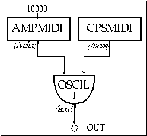
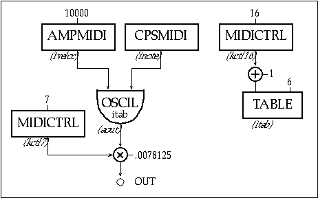
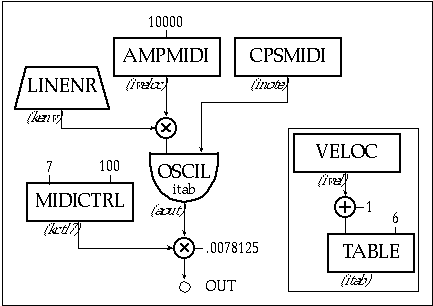
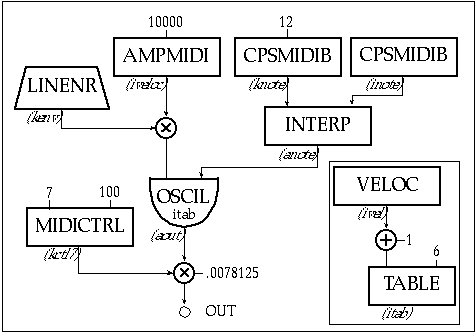
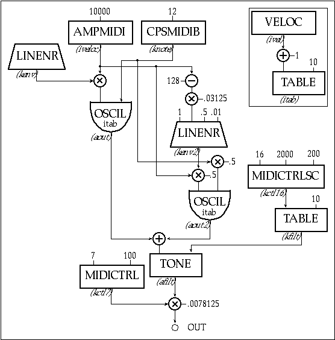
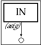

Csound was not originally designed
to produce audio in real-time. At the time it was written, only
large mainframes were fast enough to use for Csound and often
sound files had to be taken to another machine with a digital-to-analog
converter (DAC) just to hear the sound at all. Computers are much
faster now and most come with a built in DAC. In fact, in the
last 2 years, desktop computers capable of running Csound in real-time
have become the standard.
Obviously, speed is the criterion
for determining real-time performance. Csound must continually
provide the next output sample before the previous sample has
finished playing. If it ever falls behind, you will hear an audible
dropout. Even if the gap is only a single sample in duration it
will be heard as a full frequency click. In order to effectively
use Csound in real-time, you need to understand more about how
Csound generates audio.
Csound executes as a series of
loops. For example, each time a note begins there is an i-time
loop, and each k-period there is a k-time loop. We are concerned
with the output buffer loop. As Csound runs, output samples are
accumulated in internal memory, in what is called a buffer. When
the number of samples in the buffer is equal to the software buffer
size, designated in the command line (—b), Csound
dumps these samples. Ordinarily this happens when sound is written
to the hard-disk, but in real-time the samples are sent to the
DAC. Then Csound starts to fill the buffer again and the process
repeats itself.
Once the samples are sent to the
DAC, the DAC converts them into an analog signal for amplifiers,
headphones, etc. We can calculate exactly how long it will take
to play a buffer, if we know the sample rate. For instance, if
the buffer is 1024 mono samples and the sampling rate is 44100,
the buffer is 23.2 milliseconds long. With these settings Csound
would have 23.2 ms. to generate the next buffer of samples and
pass it to the DAC in order to avoid a gap.
The DAC also has a buffer built
in which is used for its internal processing. Csound allows us
to designate the size of this buffer using the —B
flag on the command line. This buffer is usually set smaller than,
or equal to, the software buffer —b.
We can avoid having dropouts,
simply by setting the buffers to be enormously big. Unfortunately,
there is a trade-off. Csound is constantly working to stay ahead
of the sound that we are hearing. There is a delay between when
Csound generates a sound and when we hear it. This delay is called
latency. When we are controlling Csound in real-time, this
is the delay between the time that we change a control and the
time that we hear the change. We can calculate the maximum amount
of latency based upon our software and hardware buffer settings.
The equation is as follows:
maximum latency(ms.) = 1000*(software
buffer + hardware buffer)*nchnls/sr
If we were to use settings of
—b 1024 and —B 256 in stereo and at sr
= 44100, our maximum latency would be 58 ms. When sounds have
a short attack time, most keyboard players notice latency when
it is larger than 20 ms. In order to stay below 20 ms., our buffers
would have to be less than 441 samples in total. Since many systems
impose power of 2 limits on the sizes of buffers, this would mean
—b 256 and —B 128.
Each computer system will have
different limitations for using Csound in real-time. You can only
find effective buffer sizes through trial and error. However,
no matter what system you use, you will reach a point where Csound
will not be able to produce sound fast enough. In that case, you
will have to make the instrument simpler and faster, make the
buffers larger (thus increasing the latency,) or use fewer notes.
There are some simple guidelines
to optimizing Csound orchestras for speed. The first is to make
the maximum use of RAM. Lets take the example of creating a sine
wave. The standard practice is to use an interpolating oscillator
(oscili) on a function table (f-table) with 1025
points. When used on the same table, the interpolating function
sounds better than its non-interpolating sibling (oscil).
However, it also takes twice as long to process. If we use a table
with 16536 points with oscil, it will sound better than
oscili on 1025 points and run twice as fast. Thus. whenever
possible, gain quality by using bigger tables instead of interpolating
opcodes.
The math in an orchestra can also
be streamlined. Never use a division when it is possible to multiply
by the inverse. Division can take 4 to 8 times as long to process
a multiplication.
Instead of:
| asig | oscil | kamp/8, 200, 1 |
use:
| asig | oscil | kamp*.125, 200, 1 |
Sometimes division is unavoidable,
such as when you are dividing by a variable:
| asig | oscil | kamp/kenv, 200, 1 |
However, division using an i-rate
variable can always be replaced by multiplication. Instead of:
| ifreq | midictrl | 16 |
| asig | oscil | kamp, 200/ifreq, 1 |
use:
| ifreq | midictrl | 16 |
| ifreq | = | 200/ifreq |
| asig | oscil | kamp, ifreq, 1 |
Now the division is only performed
when the instrument is initialized, instead of at every k-period.
Another small speed increase can
be realized by "in-lining" math functions. Instead of:
| kfilt | = | kfreq*kamp |
| aout | tone | asig, kfilt |
use:
| aout | tone | asig, kfreq*kamp |
Try to avoid conditional statements
and instruments that require excessive initialization. Conditional
statements can be quite slow in Csound. Lengthy initializations
can mean that there will be too much processing at the beginning
of a note, leading to dropouts whenever a new note begins, even
though the note plays without gaps after it is initialized.
Finally, you can change to mono
or decrease the sampling rate. These choices are primarily aesthetic,
but be careful not to choose stereo and high sampling rates simply
because that is the way you always work. If you are on stage playing
through a keyboard amp, stereo is meaningless and 22050 kHz may
sound just good as 44100 kHz. By changing these settings you can
play 4 times as many notes at one time, or cut the latency by
75%!
Using
xyin
Standard Csound instruments can
only be adjusted through a tedious process of trial and error.
The xyin opcode is an excellent option for speeding up
the process of tweaking an existing instrument because xyin
returns the coordinates of the mouse at preset intervals. Clearly,
you can then use these coordinates to control values in an instrument.
You can insert xyin into an existing orchestra without
having to make changes in the score. Whenever the instrument which
has the xyin is active, it will respond to the mouse.
The manual defines xyin
as follows:
| kx, ky | xyin | iprd, ixmin, ixmax, iymin, iymax[, ixinit, iyinit] |
The minimum and maximum arguments
set the size of the xyin window. The iprd argument
determines how often (in seconds) a new coordinate is sensed.
And the result, kx and ky, are the current mouse
coordinates. If the mouse leaves the sensing window, the last
coordinates are held until the mouse re-enters the window. The
optional ixinit and iyinit arguments allow you to
set a beginning coordinate for the mouse.
The file ch3_1.orc has
two instruments. They are identical except that instr 302
has an xyin added to control two of the parameters of the
fof opcode. As you might know, fof is a complex
opcode and it is often hard to predict exactly what will happen
aurally when you alter a parameter. In instr 301, only
the base frequency and the formant frequency of the fof opcode
are set in the score (p4 and p5) and the other parameters
are set to reasonable values. The score plays a single note for
10 seconds.
| instr | 301 | ||||||
| asig | fof | 20000, p4, p5, 0, 40, .003, .02, .007, 200, 1, 2, p3 | |||||
| out | asig | ||||||
| endin | |||||||
| instr | 302 | ||||||
| kx,ky | xyin | .01, 0, 500, 0, 300 | |||||
| asig | fof | 20000, p4, p5+kx, 0+(ky*.02),40, .003, .02, .007, 200, 1, 2, p3 | |||||
| out | asig | ||||||
| endin | |||||||
| f 1 | 0 | 4097 | 10 | 1 | |||
| f 2 | 0 | 1025 | 5 | 0.0001 | 1025 | 1 | |
| ; in | st | dur | freq | form | |||
| i 301 | 0 | 30 | 300 | 650 | |||
| i 302 | 31 | 30 | 300 | 650 | |||
Figure
3.1
Orchestra and score code for instr 301 and 302,
here a simple fof instrument (301) is enhanced with
real-time xyin control (302).
In instr 302 we have added
the xyin opcode. This creates a sensing window 500 pixels
wide and 300 pixels tall. The coordinates are updated every 1/100th
of a second. With these settings, kx is returned as a number
from 0 to 500 and ky will be from 0 to 300.
In the fof opcode, kx
is used unaltered to set the formant frequency. The p4
value from the score is added to the current horizontal coordinate
of the mouse. With our score, the formant frequency will be 650
(p5 + 0) when the mouse pointer is at the far left of the
sensing window, and move up to 1150 (p5 + 500) when the
mouse pointer is at the right side of the window. The ky value
is scaled before it is used to affect the octaviation index. The
range will be from 0 at the top to 6 (300 * .02) at the bottom.
When we run the score in real-time,
the mouse will control two of the parameters. You can quickly
find intriguing settings by simply moving the mouse into different
regions of the sensing window. You can even simulate the effect
of envelopes on the particular parameters by moving the mouse
over a range of the window.
You can insert xyin into
standard Csound instruments that are under development. Once you
have an idea of the range of values you may want to use for a
particular parameter, simply use the coordinates to move over
that range. This allows you to pinpoint the exact values you would
like to use in the final instrument. You can also use xyin
as a performance tool, but you are limited to only two controls
at a time. Additionally, you cannot alter the score during the
performance.
Using
MIDI
Csound also has a full suite of
opcodes to interpret incoming MIDI messages. However, MIDI cannot
be mixed into a conventional orchestra and score. An instrument
must be completely controlled either by MIDI or from a score file.
You cannot simply add a MIDI controller to an orchestra as we
added xyin. You must design the instrument with MIDI in
mind.
Before covering the MIDI opcodes,
you should understand how Csound deals with incoming MIDI messages.
Csound assigns the sixteen MIDI channels to instruments 1 through
16. Messages on channel 1 are received by instrument 1, channel
2 goes to instrument 2, and so on. Instruments beyond 16 cannot
receive MIDI.
When Csound receives a note-on
message on a particular channel, it creates a note for that instrument
just as if it were reading from a score. When it receives a matching
note-off, it terminates the note for that instrument. Your instruments
must be triggered by note-ons and note-offs For example, an instrument
which only reacts to controllers still needs to be triggered by
a note-on at the beginning of the note, even if that note-on is
not used for anything else in the instrument.
Because notes are triggered by
note-ons and not by the score, the notes cannot have any parameter
fields. In particular, since there is no p3 field, Csound
does not know how long a note is going to last until it ends.
This means that envelopes cannot be dependent on the length of
a note. It also means that the release portion of an envelope
must be calculated differently, as I will show later.
Csound looks to see if there are
any new MIDI messages once per k-period. If any are present,
Csound processes the oldest one. Csound handles only one MIDI
message per k-period. This means that a six-note chord
will be triggered one note at a time, and each attack will be
separated by the length of a single ksmps. Csound does
not react well to huge streams of MIDI data. For example, since
only one controller message can be handled per k-period,
sending messages more often will only cause Csound to lag behind
and create a larger latency than normal. You can increase responsiveness
by making the k-periods shorter, though this has the side
effect of slowing down the overall processing speed.
Midi.orc contains five tutorial
MIDI instruments which I will describe in detail. I have designed
them in mono, using very simple sound generators, to make them
runable on as many systems as possible. Of course, you can substitute
any Csound sound generation opcodes that your system can support
in real-time. These instruments require a MIDI controller which
can sense velocity and which has two assignable continuous controllers.
I have used controllers 7 and 16, but you can change these as
needed.

Figure
3.2
Block diagram of instr 303, MIDI control of a table-lookup
oscillator.
| instr | 303 | |
| inote | cpsmidi | |
| iveloc | ampmidi | 10000 |
| aout | oscil | iveloc, inote, 1 |
| out | aout | |
| endin |
Figure
3.3
Orchestra code for instr 303, a simple MIDI instrument.
Instrument 303 is almost the simplest
possible MIDI instrument. When a note-on is received on channel
1, cpsmidi converts the note number to cycles per second,
using a standard tempered scale. ampmidi reads the velocity
of the note-on and automatically scales it from 0 to the value
given in iscal (in this case, 10000). These values are
used to control an oscil, where the velocity becomes the
amplitude and the note number becomes the frequency.
Since a MIDI instrument does not
read notes from a score, there are no i-card entries in
Midi.sco. The score is still used to store the definitions of
the f-tables. In addition, Midi.sco contains the following
line:
| f 0 | 120 |
An f0 command instructs Csound
to run for a specified amount of time, in this case 120 seconds.
These instruments will be playable for 120 seconds, at which time
Csound will stop executing. The instruments can be run without
an f0 statement, but Csound will not stop executing unless you
force it to abort.
Instrument 301 operates just like
a standard synthesizer, with one exception: there is no preset
limit on the number of notes that may sound at the same time.
Instead, this number will be determined by how many notes your
system can generate in real-time. This means there is no automatic
protection from clipping. With instrument 301, if you have 4 or
more full velocity notes, notes will begin to clip.

Figure
3.4
Block diagram for instr 304, a MIDI instrument with mapped
controller messages.
| instr | 304 | |
| inote | cpsmidi | |
| iveloc | ampmidi | 10000 |
| kctl7 | midictrl | 7 |
| ictl16 | midictrl | 16 |
| itab | table | ictl16+1, 6 |
| aout | oscil | iveloc, inote, itab |
| out | aout*kctl7*0.0078125 | |
| endin |
Figure
3.5
Orchestra code for instr 304, midi instrument with mapped
and scaled controllers.
Instrument 304 addresses this
concern by adding a volume control. In MIDI, controller 7 is customarily
used for volume control, though with Csound any controller can
be used for any purpose. midictrl 7 reads the current value
of controller 7 and stores it in the variable kctl7, which
is then used in the out command to scale the output signal.
The value 0.0078125 is used in place of division by 128. The line
kctl7 * 0078125 turns the controller value (0 -127) into a value
between 0 and just less than 1. Csound only reads controllers
as 7-bit values (0 - 127). It will not interpret a 14-bit controller
value, which some MIDI systems form by combining two 7-bit controller
messages.
Instrument 304 also contains a
line to read controller 16, which is used to switch between f-tables
1 through 4 for the oscil command. The f-table field
in oscil is an i variable and has to be an integer.
After we read the controller value into the variable ictl16,
we use a table command to look up the integer.
| f6 | 0 | 128 | -17 | 0 1 32 2 64 3 96 4 |
GEN17 was
designed specifically for making stepped translation tables. The
table is 128 points long so that we can use the controller values
directly. -17 inhibits rescaling so that the values remain between
1 and 4. The controller value is 0 - 127, but table requires
an index of 1 - 128, so we add one.
In Csound, i variables
can only be determined before a note begins and cannot be changed
during the note. If you play instrument 302, you will notice that
when you change controller 16, nothing will happen until the next
note you play. Also, when you first start instrument 302, no sound
will come out until you move controller 7. Csound assumes that
all controllers are at 0 when you start. If you want a different
starting value you need to move each controller before you begin
to play. This will load the current value into Csound. In the
case of controller 16, this means that you can choose which table
to use before you play any notes.

Figure
3.6
Block diagram of instr 305, a MIDI instrument with linear
MIDI envelope and a "velocity switch" algorithim.
| instr | 305 | |
| knote | cpsmidib | |
| iveloc | ampmidi | 10000 |
| kctl7 | midictrl | 7, 100 |
| ivel | veloc | |
| itab | table | ivel+1, 6 |
| kenv | linenr | 1, 1, 2, .01 |
| aout | oscil | iveloc*kenv, knote, itab |
| out | aout*kctl7*0.0078125 | |
| endin |
Figure
3.7
Orchestra code for instr 305, a midi instrument with scaled
controllers and velocity switching.
Instrument 305 shows how a MIDI
controller can be initialized to a starting value. The value of
100 in the optional field of midictrl means that Csound will assume
that the initial position of the controller is 100, not 0. You
will not need to move controller 7 in order to hear sound with
this instrument.
Instrument 303 uses note velocity
instead of controller 16 to switch between f-tables. Csound
frees you to use a single piece of data in multiple ways. Because
we have already designed a table to translate a 7-bit value into
the integer we need, we use the veloc command instead of
the ampmidi command. This returns the velocity of the note
as a value between 0 -127, just as controller 16 did in instrument
302, which we can then use in the same table command as in instrument
302.
We have also added an envelope
to the note using the linenr opcode, which is a special
envelope for use with MIDI instruments. It automatically extends
the note to allow for a release after the note-off is received.
This is the only way to create a release envelope in Csound. In
this case, there is a 1 second attack and a 2 second release.
The .01 determines how steep the release is. Smaller numbers make
a sharper cutoff.
Finally, we have changed the cpsmidi
command to cpsmidib. cpsmidib automatically combines
the current pitch bend and the note number in Hertz. It is expressed
as a k value so that we can use the pitch wheel continuously
while a note is playing. cpsmidib always sets the pitch
bend range to +/- 1 semitone.

Figure
3.8
Block diagram of instr 306, a MIDI instrument with pitch
bend and smoothing via the interp opcode.
| instr | 306 | |
| knote | cpsmidib | 12 |
| inote | cpsmidib | |
| iveloc | ampmidi | 10000 |
| kctl7 | midictrl | 7, 100 |
| ivel | veloc | |
| itab | table | ivel+1, 6 |
| anote | interp | knote, inote |
| kenv | linenr | 1, 1, 2, .01 |
| aout | oscil | iveloc*kenv, anote, itab |
| out | aout*kctl7*0.0078125 | |
| endin |
Figure
3.9
Orchestra code for instr306, a MIDI instrument with controllers,
velocity switching, and pitch bend.
In instrument 306 we use the pitch
bend information to create bends of +/- one octave. We use the
optional field of cpsmidib to set the range to 12, which gives
us +/- 12 semitones.
Many MIDI synthesizers and controllers
do not send full, 14-bit, pitch change messages. Instead, the
manufacturers save money by sending 7-bit messages, even if they
use the full 14 bits for internal synthesis. 7-bit values often
result in audible steps when used to control changes in pitch.
If you run instrument 4 without the interp command you
will hear the steps clearly. interp smoothes the corners
on the steps. interp requires an initial value to begin
interpolation. inote is assigned to be the initial value
of the note-on message.
There are still only 128 possible
locations for the pitch wheel, though we are smoothing the transition
between steps. This is a common problem when you use MIDI with
Csound: 128 values often do not give an adequate resolution for
many Csound parameters, so some smoothing scheme is needed.

Figure
3.10
A block diagram of instr 307, a midi instrument with a
sub-oscillator and velocity controller attack time and a continous
cnotrolled low pass filter for EQ.
| instr | 307 | |
| knote | cpsmidib | |
| iveloc | ampmidi | 10000 |
| kctl7 | midictrl | 7 |
| ivel | veloc | |
| itab | table | ivel+1, 6 |
| kenv | linenr | 1, 1, 2, .01 |
| kctl16 | midictrlsc | 16, 2000, 200 |
| kfilt | table | kctl16, 10 |
| aout | oscil | iveloc*kenv, knote, itab |
| kenv2 | linenr | 1, (128-iveloc)*.03125, .5, .01 |
| aout2 | oscil | iveloc*kenv2*.5, knote*.5, itab |
| afilt | tone | aout+aout2, kfilt |
| out | afilt*kctl7*0.0078125 | |
| endin |
Figure
3.12
Orchestra code for instr 307, a midi instrument with a
controllers, velocity, mapping, pitch bend, and a sub-oscillator.
Instrument 307 shows how a MIDI
instrument can grow to be more responsive and more interesting.
We have added a second oscillator one octave below the first one,
at half volume. This oscillator has its own envelope. The velocity
of the note is used to determine the attack time. .03125 = 4 /
128. A velocity of 0 will result in a 4 second attack. A velocity
of 127 will cause the attack to be .03125 seconds.
We have also added a low pass
filter to the combined output of the two oscillators. The cutoff
frequency is set by controller 16. We use a new opcode, midictrlsc,
which has a scaling function built in. The range is 2000 and the
offset is 200, so kfilt will vary between 200 and 2200 Hz. We
use kfilt as the cutoff frequency for the filter.
These instruments show the first
steps in designing a MIDI controlled Csound instrument. Csound
also has opcodes for reading aftertouch (aftouch) and channel
pressure (chpress). These commands are similar to pchbend
which we used in instrument 4. Note numbers can also be read as
0 -128 using notenum, or in pch units using pchmidi.
The
in Opcode
Real-time synthesis holds the
promise of real-time signal processing. In Csound, it is a standard
practice to use sound files as input to instruments, either using
soundin or by loading the file into a GEN01 table. The
in commands (in, ins, inq) allow you
to retrieve real-time audio input from your computer's analog-to-digital
(ADC) converters. Unfortunately, standard desktop systems usually
have a large (~300 ms.) latency when using audio from the audio
input connections.
The in commands are very
similar to soundin, except that no file is specified. They
return the current sample values from the analog-to-digital-converter
(ADC) in either mono (in), stereo (ins), or quad
(inq). There is however, another stage of buffering involved.
The ADC hardware buffers the audio and Csound buffers it again.
There is no standard way to set the size of these buffers. These
buffers increase the amount of latency already present in the
output stage.

Figure 3.11 Block diagram of instr 308, a simple audio input instrument.
| instr | 308 | |
| asig | in | |
| out | asig | |
| endin |
Figure
3.12
Orchestra code of instr 308, passing audio direct from
input to output.
Instrument 308 in In.orc is the
simplest possible instrument using real-time input. The input
signal is read in mono into asig and then it is immediately
sent to the audio outputs. When you run this with In.sco, you
will hear the audio input to your computer reflected through the
audio output for 30 seconds. It will be delayed by the latency
of your system.
Conclusion
Real-time software synthesis and processing is the future of audio production. We are just beginning to see affordable systems which can perform audio manipulation in real-time. All of the Csound real-time opcodes have been added to a pre-existing structure, which places distinct limitations on their use. Current Csound developers however, are paying more attention to real-time possibilities and, slowly, Csound will get faster and more flexible. As computers get faster and manufacturers improve their sound hardware, real-time Csound will seem less like an esoteric option and more like an essential feature.